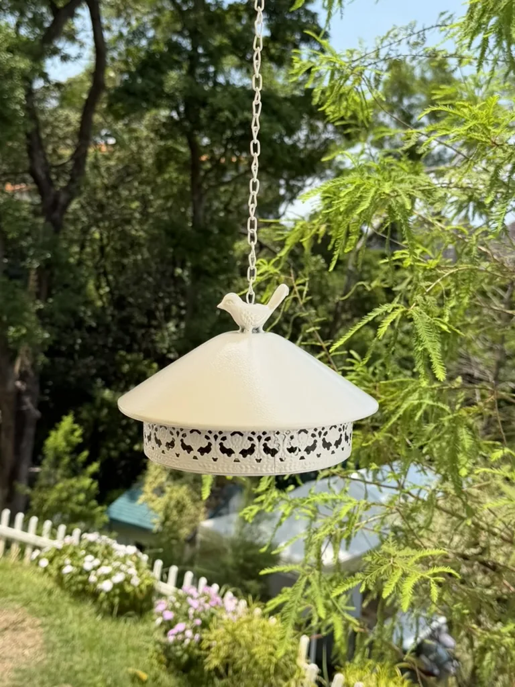
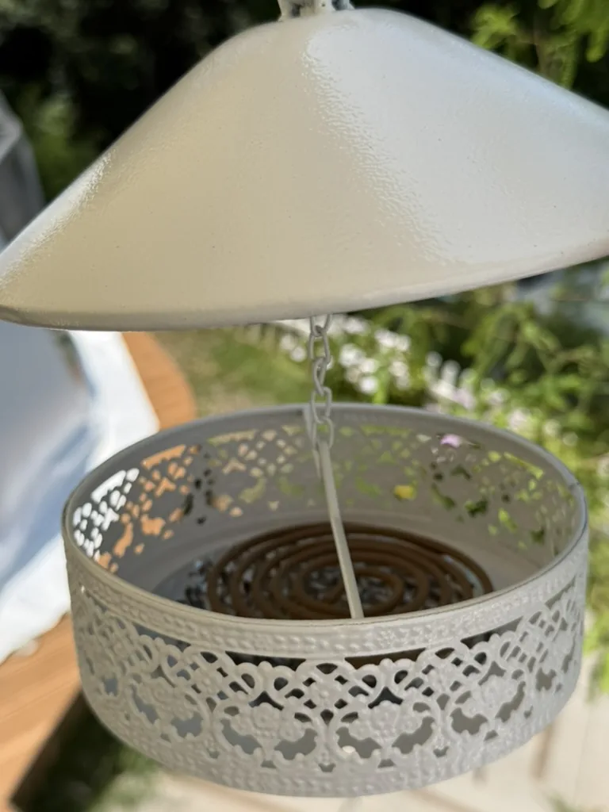
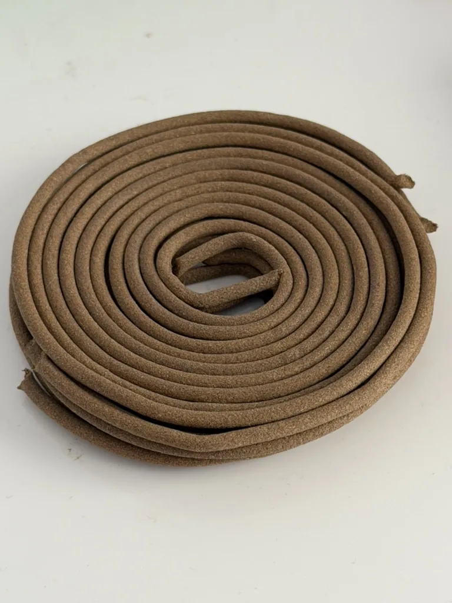

Mosquito-Control Measures for Both Tents
A forest setting naturally has insects. Cloud Tent and Balloon Tent both provide outdoor mosquito coils, mosquito-control lamps on the lawn and inside the tent, plus citronella environmental spray.
These measures cannot remove every insect from a forest environment, but using them together can noticeably reduce mosquitoes around the tent entrance, lawn seating area, and indoor space.
1. Outdoor Mosquito Coils and White Holders
White metal coil holders are available on each private lawn and near each tent entrance. Open the holder, secure one coil inside, and light the tip with the provided lighter. Once the tip is burning, gently blow out the flame so the coil continues to smolder, then close the cover.
- Use coils outdoors only; never bring a burning coil inside the tent.
- Always place the coil inside the metal holder before lighting it.
- Keep the holder away from tent fabric, dry grass, and other flammable materials.
- Before leaving the lawn or going to sleep, make sure the coil is fully extinguished.


2. Mosquito-Control Lamps on the Lawn and Indoors
Both private lawns have mosquito-control lamps, and each tent also has an indoor lamp. Turn them on after check-in to help reduce mosquitoes around the activity areas and inside the tent.
Outdoor lamps work well together with mosquito coils. Please also close the tent door promptly when entering or leaving.
3. Citronella Environmental Spray
This citronella spray is for the surrounding environment. It is not a personal insect repellent and must not be sprayed on skin or the body.
Spray a small amount on the ground around the seating area, table legs, or nearby surfaces. Avoid food, tableware, bedding, children, pets, flames, electrical outlets, and electrical equipment.
Recommended Order
- Turn on the indoor and lawn mosquito-control lamps after arrival.
- Before dusk, light coils inside the holders near the tent entrance and main lawn seating area.
- If mosquitoes remain active, spray a small amount of citronella environmental spray on the ground and table legs around the seating area.
Extinguish all coils before leaving the outdoor area or going to sleep.